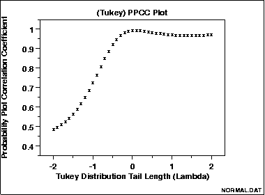

|
1.
Exploratory Data Analysis
1.3. EDA Techniques 1.3.3. Graphical Techniques: Alphabetic
|
|||
|
Purpose: Graphical Technique for Finding the Shape Parameter of a Distributional Family that Best Fits a Data Set |
The probability plot correlation coefficient (PPCC) plot
(Filliben 1975)
is a graphical technique for identifying the
shape parameter for a
distributional family that best describes the data set.
This technique is appropriate for families, such as the
Weibull, that are defined by a single shape parameter
and location and scale parameters,
and it is not appropriate for distributions, such as the
normal, that are defined only by location and scale
parameters.
The PPCC plot is generated as follows. For a series of values for the shape parameter, the correlation coefficient is computed for the probability plot associated with a given value of the shape parameter. These correlation coefficients are plotted against their corresponding shape parameters. The maximum correlation coefficient corresponds to the optimal value of the shape parameter. For better precision, two iterations of the PPCC plot can be generated; the first is for finding the right neighborhood and the second is for fine tuning the estimate. The PPCC plot is used first to find a good value of the shape parameter. The probability plot is then generated to find estimates of the location and scale parameters and in addition to provide a graphical assessment of the adequacy of the distributional fit. |
||
| Compare Distributions | In addition to finding a good choice for estimating the shape parameter of a given distribution, the PPCC plot can be useful in deciding which distributional family is most appropriate. For example, given a set of reliabilty data, you might generate PPCC plots for a Weibull, lognormal, gamma, and inverse Gaussian distributions, and possibly others, on a single page. This one page would show the best value for the shape parameter for several distributions and would additionally indicate which of these distributional families provides the best fit (as measured by the maximum probability plot correlation coefficient). That is, if the maximum PPCC value for the Weibull is 0.99 and only 0.94 for the lognormal, then we could reasonably conclude that the Weibull family is the better choice. | ||
| Tukey-Lambda PPCC Plot for Symmetric Distributions |
The Tukey Lambda PPCC plot, with shape
parameter λ, is particularly useful for symmetric
distributions. It indicates whether a distribution is short or long
tailed and it can further indicate several common distributions.
Specifically,
The Tukey-Lambda PPCC plot is used to suggest an appropriate distribution. You should follow-up with PPCC and probability plots of the appropriate alternatives. |
||
| Use Judgement When Selecting An Appropriate Distributional Family | When comparing distributional models, do not simply choose the one with the maximum PPCC value. In many cases, several distributional fits provide comparable PPCC values. For example, a lognormal and Weibull may both fit a given set of reliability data quite well. Typically, we would consider the complexity of the distribution. That is, a simpler distribution with a marginally smaller PPCC value may be preferred over a more complex distribution. Likewise, there may be theoretical justification in terms of the underlying scientific model for preferring a distribution with a marginally smaller PPCC value in some cases. In other cases, we may not need to know if the distributional model is optimal, only that it is adequate for our purposes. That is, we may be able to use techniques designed for normally distributed data even if other distributions fit the data somewhat better. | ||
| Sample Plot |
The following is a PPCC plot of 100 normal random numbers.
The maximum value of the correlation coefficient = 0.997
at λ = 0.099.
 This PPCC plot shows that:
|
||
|
Definition: |
The PPCC plot is formed by:
|
||
| Questions |
The PPCC plot answers the following questions:
|
||
|
Importance |
Many statistical analyses are based on distributional assumptions about the population from which the data have been obtained. However, distributional families can have radically different shapes depending on the value of the shape parameter. Therefore, finding a reasonable choice for the shape parameter is a necessary step in the analysis. In many analyses, finding a good distributional model for the data is the primary focus of the analysis. In both of these cases, the PPCC plot is a valuable tool. | ||
| Related Techniques |
Probability Plot Maximum Likelihood Estimation Least Squares Estimation Method of Moments Estimation |
||
| Software | PPCC plots are currently not available in most common general purpose statistical software programs. However, the underlying technique is based on probability plots and correlation coefficients, so it should be possible to write macros for PPCC plots in statistical programs that support these capabilities. Dataplot supports PPCC plots. | ||